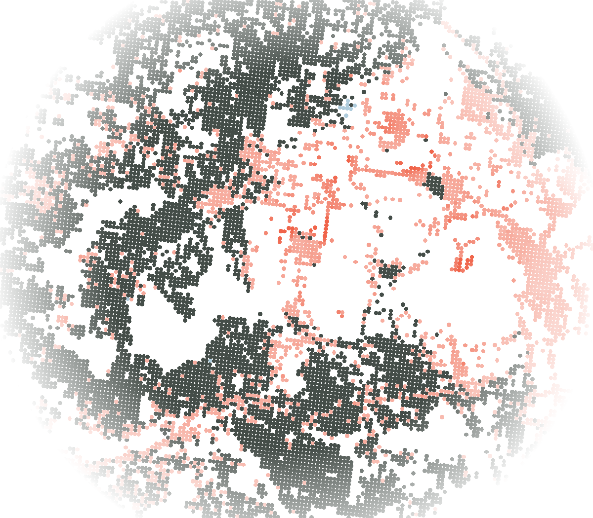

Ground movement history from satellitesHistorie pohybu terénu z družic
Before you dig, see how the ground has moved. Než začnete kopat, podívejte se, jak se hýbala zem.
We turn European satellite measurements into one page about the buildings around your construction site: stable or moving, and how fast, over the years before the build. Z evropských družicových měření skládáme jednu stránku o budovách kolem vaší stavby: stabilní, nebo v pohybu, a jak rychle, za roky před stavbou.

A survey shows one day. Not the years before.Pasport ukáže jeden den. Ne roky předtím.
Before every build, someone checks the houses next door and photographs every crack. If a wall cracks later, nobody can prove whether the ground was already moving.Před každou stavbou někdo projde sousední domy a nafotí každou prasklinu. Když pak praskne zeď, nikdo nedokáže, jestli se zem hýbala už předtím.
European Sentinel-1 satellites have measured the ground every few days since 2016, in millimetres, and the data is free. But it comes raw: millions of points from several releases that don’t fit together. We turn them into one answer per building.Evropské družice Sentinel-1 měří terén každých pár dní od roku 2016, v milimetrech, a data jsou zdarma. Jsou ale surová: miliony bodů z několika vydání, které do sebe nezapadají. My z nich děláme jednu odpověď pro každou budovu.
How it worksJak to funguje
-
Send us the sitePošlete nám místo
An address or a parcel. Before the dig, or when a dispute starts.Adresu nebo parcelu. Před výkopem, nebo když začne spor.
-
We read every measurement around itPřečteme všechna měření kolem
All published releases of the European Ground Motion Service, joined into one record. Where needed, we process the raw satellite images ourselves for the latest months.Všechna zveřejněná vydání Evropské služby pro pohyby terénu (EGMS), spojená do jedné řady. Kde je potřeba, zpracujeme surové družicové snímky za poslední měsíce sami.
-
You get one pageDostanete jednu stránku
An annex for the pre-construction survey: for each neighbouring building, stable or moving, and how fast.Přílohu k pasportizaci: u každé sousední budovy stabilní, nebo v pohybu, a jak rychle.
For survey firms that document buildings before construction, for geotechnical and structural engineers, and for the builders who pay for the survey.Pro firmy, které dělají pasportizace, pro geotechniky a statiky a pro stavebníky, kteří pasport platí.
What the page tells you, and what it doesn’tCo stránka řekne, a co ne
It tells youŘekne
- The vertical movement trend of each building over 5 to 9 years.Trend svislého pohybu každé budovy za 5 až 9 let.
- Against thresholds fixed in advance and printed on every page.Podle prahů daných předem a vytištěných na každé stránce.
- Where there is no measurement, it says so.Kde měření chybí, to tam stojí.
It doesn’tNeřekne
- Trends finer than about 1 mm a year, or sudden movement on a single day.Trendy jemnější než asi 1 mm za rok ani náhlý pohyb během jednoho dne.
- Anything in forest or on steep slopes, where satellites have no points.Nic o lese a strmých svazích, kde družice body nemají.
- Sideways movement: we report vertical movement only.Vodorovné posuny: uvádíme jen svislý pohyb.
- What caused the movement. That stays with the engineer who signs the survey.Co pohyb způsobilo. To zůstává na inženýrovi, který pasport podepisuje.
Who we areKdo jsme
Matěj KopeckýData and deliveryData a dodávkaSoftware engineerSoftwarový inženýr
Jan ChlebounProduct and qualityProdukt a kvalitaAI researcherVýzkumník v oblasti AI
Alex BečkaMarketTrhProduct managerProduktový manažer
Prague. Finalists of the ESA BIC Liftoff Challenge 2026.Praha. Finalisté ESA BIC Liftoff Challenge 2026.
Know a site well?Znáte dobře nějaké místo?
Send us its address. We’ll send back its ground movement history, and we’d like to hear whether it matches what you know.Pošlete nám jeho adresu. Pošleme vám zpět historii pohybu terénu a rádi uslyšíme, jestli sedí s tím, co o něm víte.